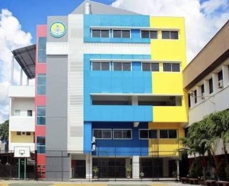
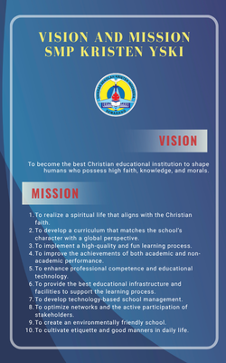
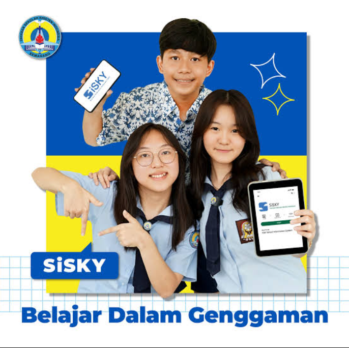
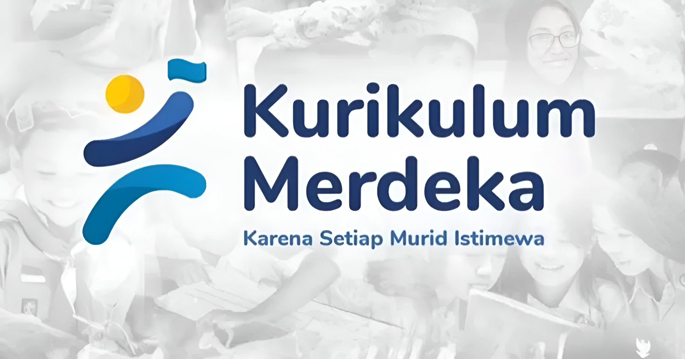
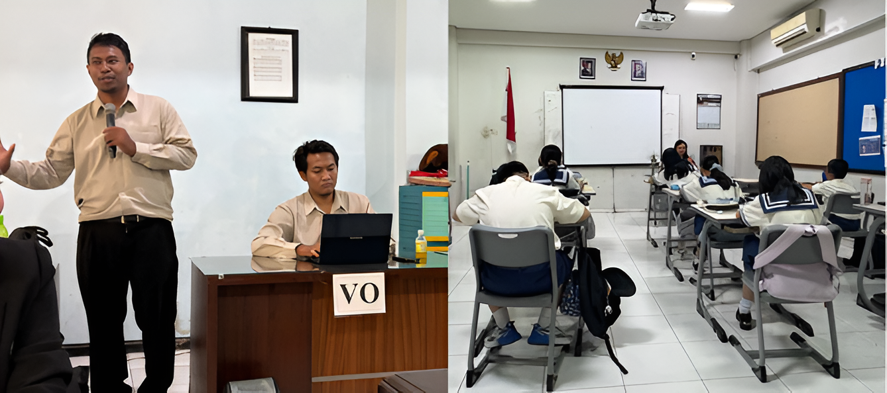
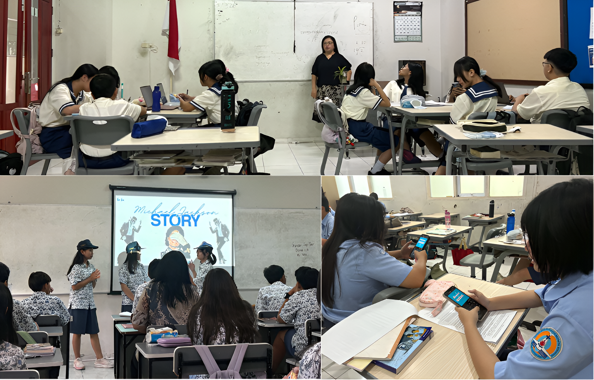
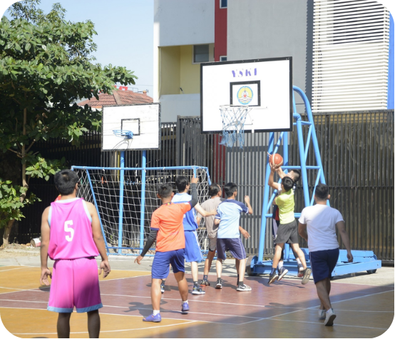
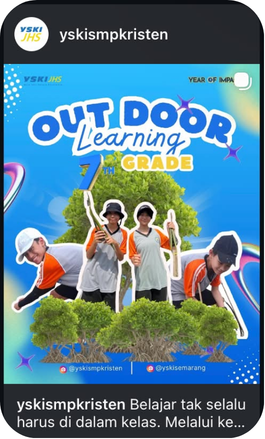

I. School Profile

Yayasan Sekolah Kristen Indonesia (YSKI) is one of the leading Christian schools in Semarang, Central Java, Indonesia. Established in 1951, the school has a long-standing commitment to academic excellence, character formation, and spiritual development. YSKI follows a holistic approach to education by integrating Christian values, the Pancasila Student Profile, and learner-centred practices into everyday school life.
The school offers both Regular Classes and Smart Classes, with Smart Classes incorporating elements of the Cambridge Curriculum to develop learners' communication, leadership, and life skills.
The school provides a supportive learning environment through modern facilities, academic resources, counselling services, and technology-enhanced instruction. Smaller class sizes, particularly in Smart Classes, allow learners to receive more individualized attention and opportunities for active participation.

*The Vision and Mission of YSKI reflect its commitment to nurturing learners who are academically competent, value-oriented, and globally prepared.
II. Academic System & Support
YSKI implements Indonesia's Kurikulum Merdeka, which emphasises student-centred, project-based, and meaningful learning experiences. The school also integrates Research, Innovation, and Technology into its curriculum while encouraging critical thinking, creativity, empathy, and real-world problem-solving. Smart Classes further enrich learning through the Cambridge approach, focusing on public speaking, entrepreneurship, career preparation, and other essential life skills.


To support student learning, YSKI uses SISKY, a digital learning management system that monitors attendance, academic progress, schedules, and communication among teachers, students, and parents. The school also adopts a Flipped Classroom approach, where learners explore lesson content before class and use classroom time for discussion, collaboration, and deeper application of concepts.
III. Learning System & Extracurricular Activities
One distinctive feature of YSKI is its strong emphasis on character and spiritual formation. Every morning begins with devotion, reflection, and school-wide announcements. Classrooms are equipped with speaker systems that play the Indonesian Reflection and the Word of God before lessons officially begin, creating a reflective atmosphere for both students and teachers. Teachers also gather for devotion and prayer, reinforcing a culture of faith, unity, and gratitude throughout the school community.

Inside the classroom, learning is interactive and collaborative. Teachers encourage participation through group discussions, presentations, educational games, technology-based activities, and project-based learning.

Beyond academics, students can join various extracurricular programmes such as basketball, futsal, badminton, scouting, outdoor learning activities, student leadership organisations (OSIS), and community-based projects. These opportunities help learners develop teamwork, leadership, responsibility, resilience, and social awareness while preparing them for lifelong learning.

